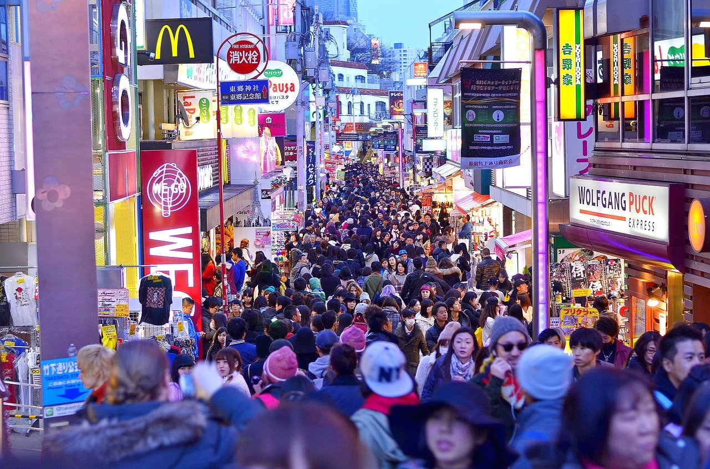
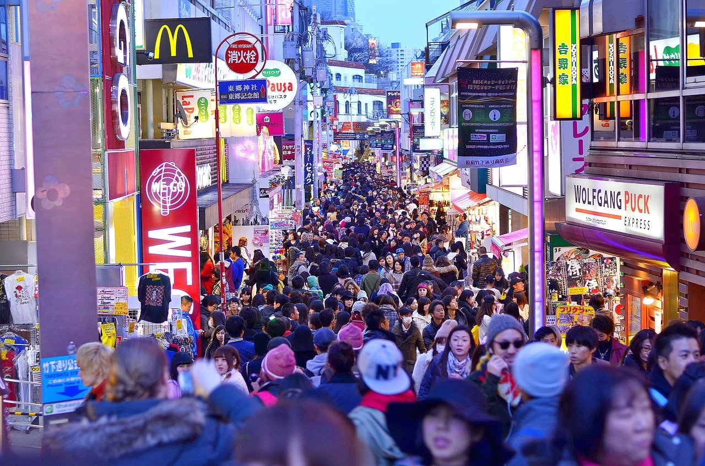
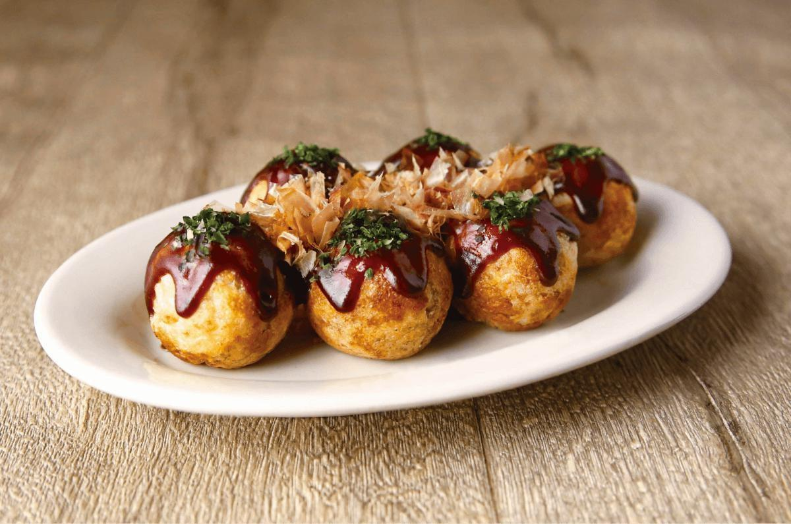

Over mij
Ik heb altijd al naar Japan willen gaan, vooral Tokyo. Ik hou van de Japanse cultuur en ik vind het leuk om anime te kijken en manga te lezen, wat dus een grote reden is voor mij om naar Japan te gaan. Ik ben namelijk opgegroeid met anime, omdat mijn moeder vroeger ook veel anime keek toen zij klein was. Naar Japan/Tokyo gaan is een grote droom die ik ooit wil waar maken. Ik zou zeker alle seizoenen daar willen meemaken, vooral lente vanwege de bloesembomen (wat mijn favoriete bloemen zijn).
 

Japans eten
Ik hou erg veel van Japans eten, vooral sushi, takoyaki, tempura en ramen. Dit is ook één van de grootste redenen waarom ik naar Japan wil. Toen ik 9 was had ik voor het eerst sushi geprobeerd en sindsdien is sushi één van mijn favoriete eten en heb ik altijd naar Japan willen gaan. Ik vond takoyaki best spannend om te eten toen ik het voor het eerst at, omdat er octopus in zit en ik had nooit eerder octopus gegeten. Sowieso vind ik octopus nu zelf minder lekker, maar takoyaki is een uitzondering. Zelf ga ik hier in Nederland vaak naar Japanse restaurants met vrienden en familie, maar het is mijn droom om ooit Japans eten in Japan zelf te proberen.

Verschillende seizoenen
Zoals ik al eerder zei, ik zou graag alle seizoenen in Japan/Tokyo willen meemaken. In de lente, zomer, herfst en winter ziet het er prachtig uit. Ik heb gehoord en gelezen op internet dat er veel verschillende activiteiten te doen zijn in alle seizoenen. In de lente kun je bijvoorbeeld de bloesembomen bewonderen, in de zomer zijn er vaak festivals, in de herfst ziet het landschap er prachtig uit met herfst bladeren en in de winter valt er vaak sneeuw. Een jaar in Japan verblijven zou voor mij geweldig zijn!